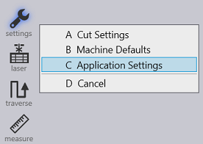

Cut CAM
Finishing Rules
Finishing rules define all processes done automatically after nesting and have many benefits including collision prevention, restoration to balance of potentially tilting parts, and making optimal use of an entire worksheet surface.
When auto-tooling the order of rules in this list is important. When the cut generates tooling for a contour, it checks this contour against each rule in the list, starting at the first rule. If the shape matches any rule, the corresponding action is applied; the software does not process any further rules for this contour. The checkbox at the beginning of each row can be used to temporarily disable any rule without having to delete it.
| These finishing rules are applied at the time of auto-tooling a part. Hence, any change done here will take effect only when you recompute tooling. These settings have no effect whatsoever at the layout level. |
Contour - Select here the type of contour. The available options for contour types.
All - Contours are not filtered based on contour type if 'All' is the selected option for contour type.
Inner - All inner contours of a part are eligible for applying this rule.
Outer - All outer contours of a part are eligible for applying this rule.
Stable - All contours (inner as well as outer) which will remain stable on slats are eligible.
Stable Inner - All inner contours will remain stable on slats.
Stable Outer - All outer contours will remain stable on slats.
Unstable - All contours (inner as well as outer) which will either tip or fall through the slats are eligible.
Unstable Inner - All inner contours that are unstable on slats.
Unstable Outer - All outer contours that are unstable on slats.
Colliding - All unstable contours that are too close to the other contours of the part. If this contour were cut first, an adjacent contour could not be cut without the risk of head collision with the tipping contour. Contours that are stable on slats are never considered to be colliding. If an inner contour is too close to another inner contour, both are unstable and then both will be marked as colliding. If an inner contour is too close to an outer contour, only the inner contour will be marked as colliding. It is unnecessary to mark the outer contour as colliding as it will almost always be cut after the inner contour. The new parameter Allowance when routing around tipping holes is used to decide if two contours are too close.
Colliding Inner - All inner contours that are colliding.
Colliding Outer - All outer contours that are colliding.
Size - The maximum limiting size of contours for which this rule applies. You can either type in the size in the form of “widthxheight” or type in just one number if both width and height have the same value. Action - The action to perform; microjoint, scrap cut etc.
None - No special action is taken
Auto Microjoint - Applies microjoint(s) on the contour. The software will automatically decide how many microjoints are required based on the parameter Maximum allowed dip into slats
Cut up scrap - Cut larger cutouts
One microjoint - Create exactly one microjoint on the contour
Two microjoints - Create exactly two microjoints on the contour
Three microjoints - Create exactly three microjoints on the contour
The software automatically recognizes whether a part could tilt on a layout. Possible tilting/unstable parts will be marked with red coloured contours on the layout, therefore allowing adjustment to the finishing rules before processing the job.

Microjoint Settings
TecZone Laser can decide the number of microjoints needed on a contour. Usually, one microjoint is enough, but in some cases (typically, long thin contours) more microjoints might be required to provide enough support to the contour so that it does not tilt into the slats or break the microjoint due to the torque created by its own weight or gas blowing over it.
A large inner contour could be evaluated as being stable at the part level. However, on a layout, if smaller parts are nested in this cut-out, it could become unstable. The software will detect such situations and automatically add a microjoint. This is done dynamically even while the user is manually changing the layout.
For example:
The inner hole of this part will be stable on the machine slats hence no microjoint is created.
With another part placed inside the hole, it could now tip, hence the software automatically creating a microjoint. Removing the smaller part out, the microjoint will be removed automatically.
Navigate to Application settings → settings → Cut CAM → Microjoint settings.


-
Length - Enter the size of the microjoint.
-
Max. allowed dip into slats (determines no. of microjoints) - This is the maximum distance the microjoint is allowed to dip into slats on a contour.
-
Spacing (also determines no. of microjoints) - This setting along with the above setting, determines number of microjoints. Of the two methods, one with the higher microjoint count will be used.
-
Upper limit for no. of microjoints on contour - The maximum number of microjoints allowed on the upper-most side of the contour.
-
Preferred microjoint type:
-
Hard - Hard coded microjoint that cannot be modified on the machine.
-
Soft - Microjoint that can be modified on the machine.
-
Nano - An alternative to usual microjoint, where no approach is required. Possible only on large contours. Commonly used in twinline processing.
-
-
Nanojoints stability - Controls the stability for nanojoints.
Nanojoints are a better alternative to usual microjointIn the
case of twinline tooling, they are a game changerFlux is ready to use
nanojoint instead of hard or soft microjoints when this advanced feature
is available on the user’s machine.
In the settings window, for TruLaser machines, user can choose
the preferred type of microjoint.
Available options are
Hard, Soft & Nano.
Sequence Ordering

Start Corner is the start corner of the tooling. The start corner choices are bottom left, bottom right, top left and top right.
Sort Direction is the sequencing of the parts on the sheet.
Auto - Automatically sorts the parts by choosing the direction with the shortest distance.
X First - Sorts the parts in the X direction first.
Y First - Sorts the parts in the Y direction first.
Staggered - Sequencing is done such that the next part has a maximum distance to the recently cut part to address heat dissipation.
Other Settings
This option is whether points should be processed or skipped when importing.
None - Imports all points
Points on polylines - Skips points on polylines
All - Skips all points on import.
Pre-Cutting

Blank is already sheared-to-size - This option will be enabled when the sheet is already cut to the correct size.
Blank Margins - This option is to input a margin to be cut to the edge of the blank.
Measuring distance from the sheet edge - Distance from the sheet edge the pre-cutting should begin.
Overtravel after the sheet edge - This is the overtravel distance allowed from the sheet edge.